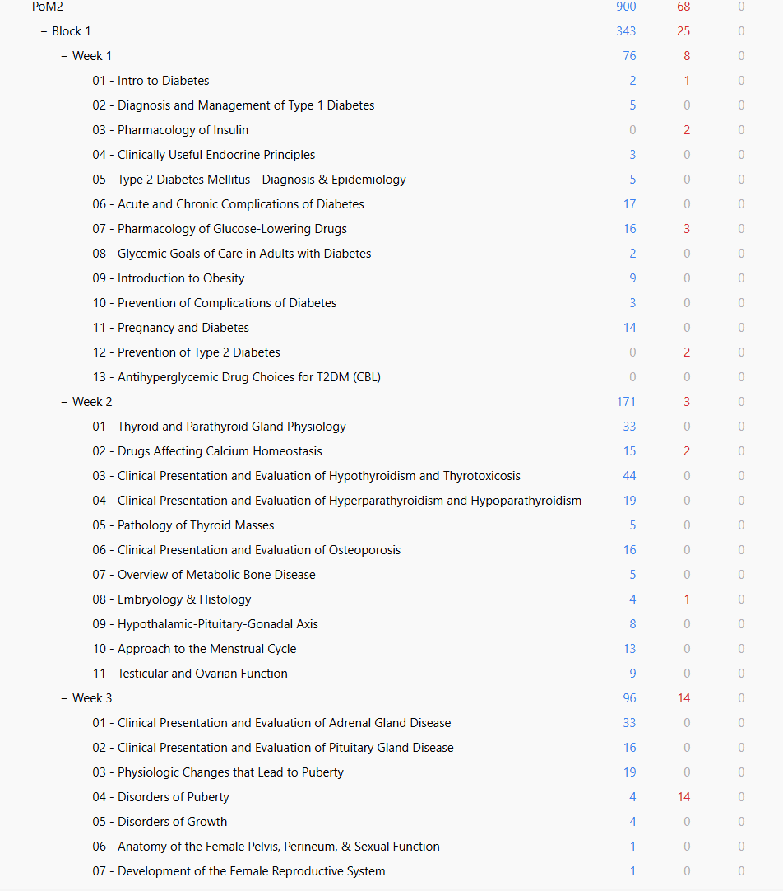

Draft
Built from upper-year Christina’s Anki deck. Not yet checked against this year’s lecture slides.
PoM 2, weeks 12–16
923 cards from 837 notes, across 41 lectures. 195 are marked high-yield.
Christina’s deck, the one the classes pass down, filed by week and lecture the way the notes are. The cards are hers as she wrote them; they have not been checked against this year’s lecture slides yet.
To import it: open Anki on a computer, then File → Import and pick the file. It arrives as PoM2::Block 4 with the week and lecture subdecks intact, so it sits beside whatever you already have rather than merging into it.

Week 12 268
- 01 - Understanding and Managing Chronic Pain18 · 1 high-yield
- 02 - Psychological Factors in Managing Chronic Pain3
- 04 - Introduction to Neuroanatomy16 · 1 high-yield
- 05 - Cranial Nerve Anatomy and Function57 · 7 high-yield
- 06 - Facial Anatomy30 · 5 high-yield
- 07 - Anatomy of the Cranial Cavity72 · 5 high-yield
- 08 - Neuroanatomy of the Cortex42 · 7 high-yield
- 09 - Introduction to Neurophysiology30 · 5 high-yield
Week 13 283
- 01 - Orbital Anatomy34 · 6 high-yield
- 03 - Neuroanatomy of the Brainstem, Basal Ganglia, and Diencephalon42 · 6 high-yield
- 04 - Neuroanatomy of the Spinal Tracts and Cerebellum48 · 8 high-yield
- 05 - Neurophysiology of Sensation9
- 07 - Neurophysiology of Reflexes11 · 1 high-yield
- 09 - Neurophthalmology32 · 22 high-yield
- 10 - Cortical Syndromes19 · 5 high-yield
- 11 - Approach to Weakness27 · 21 high-yield
- 12 - Approach to Localization20 · 15 high-yield
- 13 - Neuroembryology13 · 1 high-yield
- 14 - Autonomic Nervous System28
Week 14 194
- 01 - Approach to Head Injuries28 · 4 high-yield
- 02 - Multiple Sclerosis15 · 2 high-yield
- 03 - Approach to Stroke40 · 17 high-yield
- 04 - Approach to Sensory Symptoms17 · 2 high-yield
- 05 - Neuropathic Pain6
- 06 - Approach to Headache25 · 5 high-yield
- 07 - Approach to Altered Level of Consciousness11 · 2 high-yield
- 08 - Approach to Seizures14 · 4 high-yield
- 09 - Recovery in the Nervous System3
- 10 - Neurosurgical Emergencies4 · 4 high-yield
- 11 - Neuroinfections31 · 15 high-yield
Week 15 148
- 01 - Multidisciplinary Care in ALS13 · 4 high-yield
- 02 - Brain Tumors25 · 6 high-yield
- 03 - Pediatric Neurology22
- 04 - Non-Mendelian Genetics12 · 1 high-yield
- 05 - Movement Disorders30 · 6 high-yield
- 06 - Monocular Vision Impairment16 · 3 high-yield
- 07 - Red Eye and Ocular Trauma14
- 08 - Pediatric Ophthalmology16 · 1 high-yield
Week 16 30
- 02 - Integration of Medicine and Neurology3 · 3 high-yield
- 04 - Hearing Loss17
- 05 - Vertigo10
Loading notes…